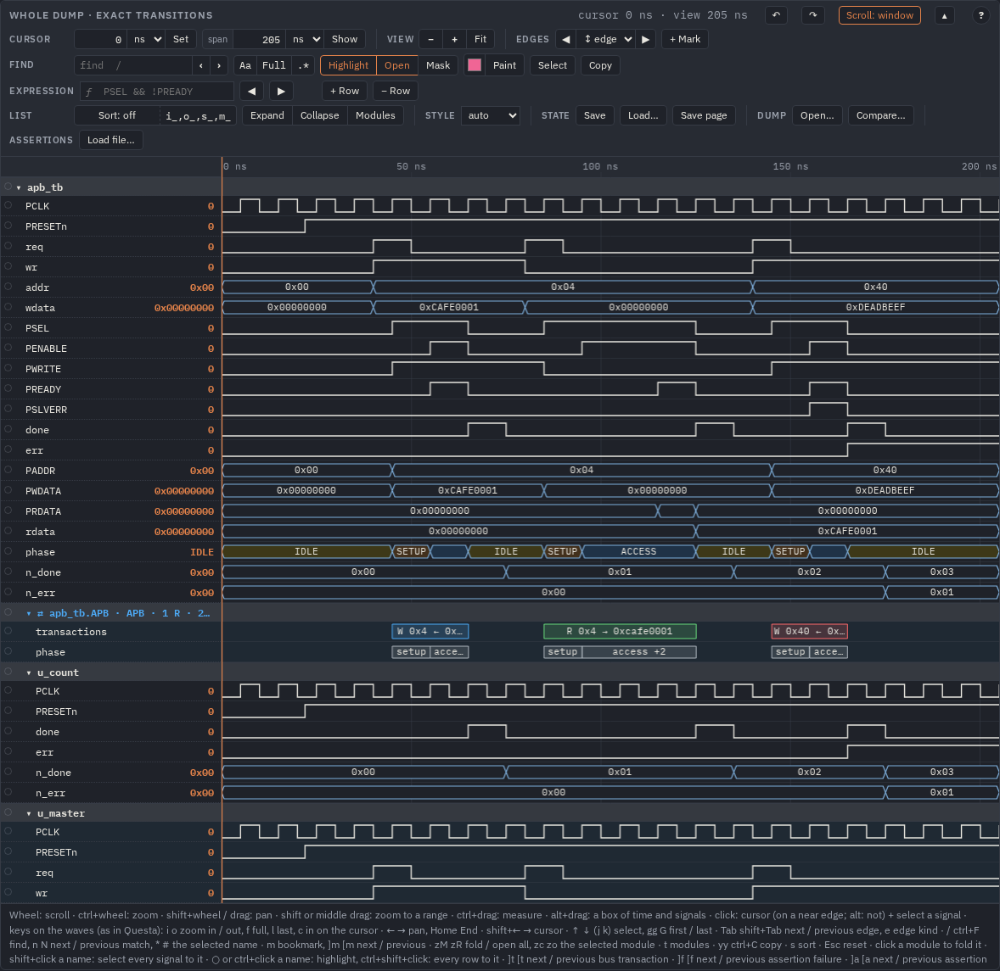
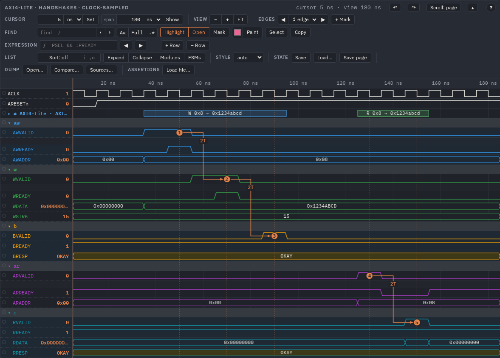
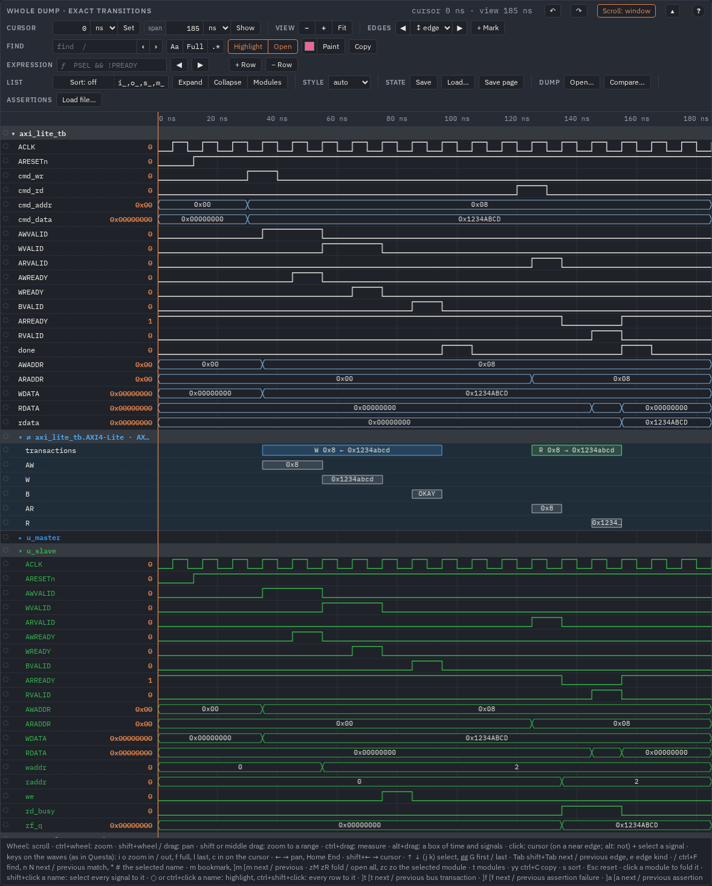
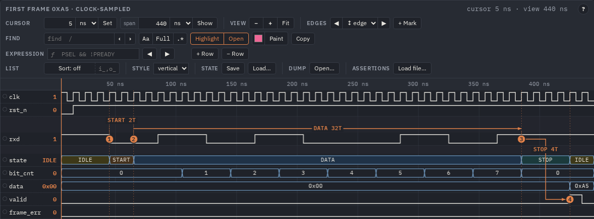
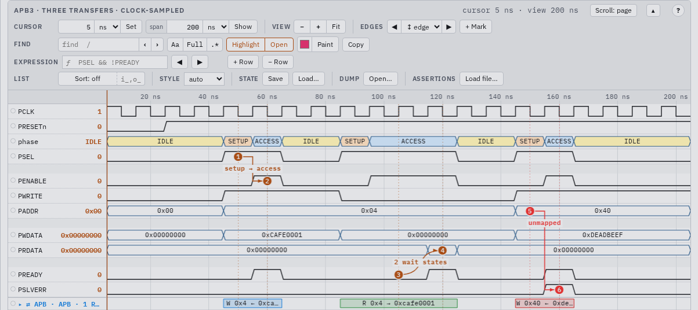

From a dump to a page
A simulator dump (VCD or FST) becomes one self-contained HTML page: the viewer, the data and the assertion engine
inlined, so the file opens from file://, can be mailed or archived, and needs nothing installed. This guide walks
through the one-command path, the config file you edit to shape the page, views, colours, FSM names, structs, settings and big
dumps.
The quick path
- Put your dump under
work/(the configs there are tracked by git, the dumps and pages are ignored). - Build the page:
make html WAVES=work/my.vcd # work/my.config.json if missing, then work/my.html make html WAVES=work/my.fst # FST (read through fst2vcd or sva vcd): FSM states named from the dump - Open
work/my.htmlin a browser from 2023 on (Chrome / Edge 111, Firefox 113, Safari 16.2). - Edit
work/my.config.json(hide signals, colour them, add views, bookmarks …) and runmake html WAVES=work/my.vcdagain. - After a new simulation changed the dump's signals:
make config WAVES=work/my.vcd— new signals are added, gone ones dropped, your edits kept.
Behind make html are two tools, Python 3.8+ with the standard library only. Without make (and on
Windows, with py for python3):
python3 tools/mkconfig.py work/my.vcd --out work/my.config.json # every signal of the dump, one line each
python3 tools/mkhtml.py --config work/my.config.json --out work/my.html # every view of the config -> one page| Make variable | Does |
|---|---|
WAVES=x.vcd|x.fst | the dump; the config and the page are named after it |
CONFIG=work/x.config.json | build from a config written by hand (HTML= names the page) |
SV="rtl/*.sv" | enum labels and struct fields from the sources (for a VCD) |
SVA="checks/*.sv" BIND="name@scope,…" | assertions bound and evaluated (Assertions) |
BASE=my.base.json | the starting settings of a new config (default tools/base.config.json) |
What the page contains

make example EX=apb). The title and the intro from the config's
"page", a line of facts — the dump, the reader, the number of views, the assertion files and how the checks went, the
time it was generated —, the Theme button, then every view with its title, its note and its viewer (or
static SVG).- One section per view of the config, each a viewer, a static SVG or both. Scopes are foldable groups.
- With assertions (
"sva"and"bind"): the assertions panel in every viewer and, at the end, a printable Assertions section with the results over the whole dump. - Everything inline but the fonts: the page asks Google Fonts for IBM Plex Sans and Mono; offline it uses a local IBM Plex
(Debian / Ubuntu:
fonts-ibm-plex), elseSegoe UI/system-uiand the system monospace. It works the same, only the letters differ. - The Generated time makes every build a different file.
mkhtml.py --reproducibleleaves it out,SOURCE_DATE_EPOCH(seconds, UTC) sets it: the same inputs give the same bytes.
The generated config
tools/mkconfig.py writes every signal of the dump under its full path, one line each. A real one, from the FSM
example's VCD with its types (fsm.types.json beside it, State names):
"signals": {
"fsm_tb.clk": {"show": true, "radix": "", "color": "#2f9e44", "style": "", "width": 1, "changes": 213},
"fsm_tb.rst_n": {"show": true, "radix": "", "color": "#e8590c", "style": "", "width": 1, "changes": 1},
"fsm_tb.rxd": {"show": true, "radix": "", "color": "", "style": "", "width": 1, "changes": 12},
"fsm_tb.state": {"show": true, "radix": "", "color": "", "style": "", "width": 3, "changes": 9,
"enum": {"0": "IDLE", "1": "START", "2": "DATA", "3": "STOP", "4": "ERROR"}},
"fsm_tb.status": {"show": true, "radix": "", "color": "", "style": "", "width": 16, "changes": 25,
"fields": [{"name": "state", "msb": 15, "lsb": 13, "enum": {…}}, {"name": "bit_cnt", "msb": 12, "lsb": 10}, …]},
"fsm_tb.u_rx.MID": {"show": false, "radix": "", "color": "", "style": "", "width": 2, "changes": 0},
…
}Edit the entries; "" means the global value from the config's "config".
| Key | Values |
|---|---|
show | false: left out of the page (constants start hidden) |
radix | auto hex dec signed bin oct ascii float, fixed point q8 / sq15 |
color, fill | the trace / outline / name colour; a bus's fill |
style | auto wavedrom questa square |
alias | the name shown |
enum, enumColors | value labels {"0": "IDLE"}; the fill by label or number
{"IDLE": "#ffe066", "3": "c5"} |
analog | true or a number of rows: the bus as a step plot |
height | the row's own height in px |
fields | a packed struct dumped as one vector: a {} row with the whole value, a row per field under it |
width, changes | information only (the bus width, the value changes in the dump) |
A VCD's real and string variables become rows of texts, event variables are left out, VHDL's nine
values are folded into 0 1 x z. Run make config (mkconfig.py --update) again after the dump
changed: your edits stay; it refuses a dump that lost more than half of the config's signals (another design?) unless
--force.
The starting values: base.config.json
A new config starts from tools/base.config.json (BASE= for your own). Two keys only decide the starting
per-signal settings:
"select": which signals start shown — scopedepthbelow the top (99: all),constants,hidepatterns ($rootio.*), and abudgetof value changes for one page (6 M; above it the deepest levels are dropped first and the tool says which depth it kept)."rules": settings by full-path pattern and width, later rules win:"rules": [ { "match": ["*clk", "*clk_i", "*clk_in", "*clock"], "width": 1, "color": "#2f9e44" }, { "match": ["*rst", "*rst_n", "*rst_ni", "*reset", "*reset_n"], "width": 1, "color": "#e8590c" }, { "match": ["*_valid", "*_ready"], "width": 1, "color": "#f59f00" } // one of your own ]
The rest is copied into the new config: "exact": true, "hierarchy": true (every scope a group), page
settings (fold: 2, maxHeight: "80vh", groupOrder: "last", sortIgnore …) and one
view "all".
Views: several pictures of one dump
"views" are named variants; mkhtml.py builds each one as a section of the page. A view takes any top-level
key and adds its own. The APB example's config, written by hand:
{
"scope": "apb_tb", // names below are relative to it
"sva": ["apb_tb.sv", "apb.sva"], // assertion files (Assertions guide)
"bind": [{ "assert": "*", "scope": "apb_tb" }],
"enum": { "phase": { "0": "IDLE", "1": "SETUP", "2": "ACCESS" } },
"config": { "radix": "hex", "nameWidth": 170, "rowHeight": 26 }, // settings of the whole page
"page": { "title": "APB3 · write, read with wait states, slave error", "intro": "An APB3 master drives …" },
"views": {
"transfers": {
"clock": "PCLK", "from": "0ns", "to": "200ns", // one cell per PCLK cycle
"signals": ["PCLK", "PRESETn", "phase", "PSEL", "PENABLE", "PWRITE", "PADDR", "PWDATA", "PRDATA", "PREADY", "PSLVERR"],
"title": "APB3 · three transfers · clock-sampled",
"note": "one cell per PCLK; the numbered bookmarks explain the transfers, the arrows join cause and effect",
"bookmarks": [
{ "n": 1, "t": "50ns", "signal": "PSEL", "text": "SETUP: PSEL high, PADDR / PWRITE / PWDATA valid for the whole transfer" },
{ "n": 2, "t": "60ns", "signal": "PENABLE", "text": "ACCESS: PENABLE high; PREADY high ends the write in this cycle" }, …
],
"arrows": [ { "from": 1, "to": 2, "shape": "-|-", "label": "setup → access" }, … ]
},
"write": {
"clock": "PCLK", "from": "30ns", "to": "80ns", "render": "svg", // a static figure
"signals": ["PCLK", "PSEL", "PENABLE", "PWRITE", "PADDR", "PWDATA", "PREADY"],
"title": "APB3 write · static SVG",
"config": { "svaShow": ["apb_setup_then_access", "apb_end_of_transfer"] }
},
"exact": {
"exact": true, "from": "0ns", "to": "205ns", // every transition at its time
"signals": ["PCLK", "PRESETn", "phase", "PSEL", "PENABLE", "PWRITE", "PADDR", "PWDATA", "PRDATA", "PREADY", "PSLVERR", "done", "err", "rdata"],
"marker": ["posedge done=done", "posedge PSLVERR=error"],
"title": "APB3 · the whole run · exact transitions"
}
}
}(JSON has no comments: the // notes are for this guide only.)
| View key | Meaning |
|---|---|
signals | the rows, in order: names under scope, full paths, or * / ? patterns over
the full paths of a generated config ("tb.*_valid"); "PADDR=addr" shows it as addr |
from, to | the window ("120ns"); default the whole dump |
clock / exact | one cell per clock cycle (plain WaveDrom, the value after the edge) / every transition at its time (WaveDrom guide) |
group, hierarchy | named groups {"aw": ["AWVALID", …]}; or every scope a group |
marker | "posedge done=done": dashed markers, the go to buttons |
bookmarks, arrows | numbered notes and arrows (the viewer's JSON button writes them for you) |
render | view (default), svg (a static figure), both |
title, note | the section heading and the line under it |
config | settings of this view only (layer 3 below) |
gap, auto-gap | clock views: windows or idle stretches as one | cell
(Gaps) |
sva, bind, exprs | assertions and expression rows of this view |
mkhtml.py --view transfers builds some views only; --waves other.vcd runs the same config on another dump.
Hierarchy and module shading
A generated config has "hierarchy": true: every scope is a group, module rows bold on a darker band, the signals of
neighbouring modules alternating between two backgrounds (moduleShading). A click on a module folds it; fold
sets what starts folded (true, a depth, or paths), groupOrder: "last" lists a module's signals before its
sub-modules. Hover a name for its full path.

apb_all.html, made by mkconfig.py from the dump. apb_tb on top with its
signals (phase labelled from the sources, --sv), the APB port that the
viewer found by its names (⇄ apb_tb.APB), then the modules u_count and u_master, each on its own
background.Groups and colours
Colour is the quickest way to read a bus. Give every channel of a protocol its own group and colour; a group's colour goes to its signals (trace, bus outline, name) and to its name, a signal with its own colour keeps it:
"group": { "aw": ["AWVALID", "AWREADY", "AWADDR"], "w": ["WVALID", "WREADY", "WDATA", "WSTRB"], "b": ["BVALID", "BREADY", "BRESP"],
"ar": ["ARVALID", "ARREADY", "ARADDR"], "r": ["RVALID", "RREADY", "RDATA", "RRESP"] },
"config": { "groupColors": { "aw": "#339af0", "w": "#37b24d", "b": "#f59f00", "ar": "#ae3ec9", "r": "#1098ad" } }
⇄ AXI4-Lite row, a bookmark on every VALID & READY handshake and -|- arrows with the latency
(2T).groupColors keys are group names, full paths or * patterns, and the nearest matching group wins:
{"tb.dut.u_rx": "#37b24d", "*fifo*": "#f59f00"} colours modules of a generated config.

groupColors on u_master, u_slave,
u_regfile); u_master folded. The clocks keep the green of the *clk rule.Other ways to colour: "color" in one signal's entry; a "rules" line of the base file for many signals by
name; interactively, Paint in the viewer's find group (Viewer).
FSM state names
A state bus shows IDLE, START … instead of numbers when the page knows the enum:
- FST written by Verilator (
--trace-fst) carries the enum tables of the design:make html WAVES=x.fstlabels the states by itself. - VCD has none: the design's types next to it,
x.types.jsonfrom Questa or Verilator, label every state bus by its path.make html WAVES=x.vcdfinds the file by itself; see State names and structs. - Without a types file,
make html WAVES=x.vcd SV="rtl/*.sv"(mkconfig.py --sv) readstypedef enum {…} name_t;from the sources and labels the signals declared with those types by their names. A name declared with two types, or also as a plain vector, gets none. - By hand:
"enum": {"0": "IDLE", …}in the signal's entry, or a top-level"enum": {"phase": {…}}.

enum: the names come from the FST). Edges in the
questa style (the bar's style shows vertical), a bookmark at every state change and
-|- arrows with the time spent in each state.Packed structs
A packed struct is shown as a {} row with its whole value and a row per field under it. Two sources:
- an FST written with Verilator
--trace-structshas struct scopes: each is a{}group by itself; - a struct dumped as one vector: the types file gives its
"fields"(seefsm_tb.statusin the config above; nested structs asin.st), elsemkconfig.py --sv(SV=) fromtypedef struct packed, or write them yourself:[{"name": "state", "msb": 15, "lsb": 13, "enum": {…}}, …], MSB first.

status, a 16-bit packed struct: its whole value on the {} row, then state (by
name), bit_cnt, valid, frame_err, data.Settings in layers
Colours, sizes, fonts, sorting, folding and highlight are settings, merged in this order (later wins):
- the built-in defaults;
- global: for a generated page the config's top-level
"config"(in your own pageswavelens/wavelens.config.jsorWaveLens.configure); - a view's
"config"(the diagram's own); - the element (
data-config…, your own pages); - the viewer's own choices, kept in the browser (the edge style of its bar).
A key that is no setting (a typo: rowHeigth) stops the tools with an error. The keys you will use most:
| Key | Default | Meaning |
|---|---|---|
radix | auto | bus values: ≤ 6 bits decimal, else hex; or hex dec signed bin oct ascii float
q8 sq15 |
style | auto | wavedrom slanted, questa vertical, square |
nameWidth, rowHeight | 200, 26 | the name column and a row, px |
sort, sortIgnore | none, [] | the order; prefixes skipped when sorting
(["i_", "o_"]) |
fold, groupOrder, moduleShading | none, file, true | what starts folded; signals before sub-modules; alternating module backgrounds |
maxHeight | none | "80vh": the rows scroll inside the viewer |
groupColors, enumColors | none | a colour per group; a fill per value |
highlight, dim | none, 0.3 | instances in front at start, the opacity of the rest |
theme, colors | auto, {} | light white dark; colour tokens |
gaps, gapIdle, gapKeep | false, 16, 2 | idle stretches left out of pictures and static SVGs (Gaps) |
savePage | true | the bar's Save page: the page as a file with your view in it (Save and Load) |
cycles, cycleClock, cycleZero | false, null, null | the cycles of a clock in a
band under the time axis, the clock counted, the time of cycle 0 ("50ns", or ps) (Clock cycles) |
svaOpen, svaShow | false, all | the assertion list open at start; which assertions are drawn |
Every key with its default: USAGE § Settings and wavelens/wavelens.config.js.
Themes
Three themes — light (warm paper), white (black traces, for print and slides) and dark — follow
the system's prefers-color-scheme; the page's Theme button switches them, "config": {"theme":
"white"} fixes one. The pictures of these guides are dark; the APB page in light:

"colors": {"trace": "#c00"} in
"config" changes it for the page.Print (ctrl+P) draws every row of every viewer, not only the part in view, with its title and cursor readout; the bar's tools are left out.
Large dumps
A real design's dump — test_stream_video.vcd, 24 MB, 3520 signals in 214 scopes, 4.9 M value changes: the config in
2.7 s, a page with every changing signal (1526 signals, all 9 scope levels) in 25 s and 6.3 MB; it opens in 2 s and redraws in 4 ms.
The viewer's canvas covers only the visible rows, so any number of rows scrolls smoothly.
- Above the base file's
select.budget(6 M value changes)mkconfig.pyhides the deepest levels first and says which depth it kept; show more by hand or raise the budget. - A view's
from/toand a shortsignalslist keep a page small; several views of one dump cost only what each one shows. - Keep the dump and the page out of git: under
work/only the configs are tracked.
The dump reader
The tools read a VCD in one pass in Python (standard library only), an FST through GTKWave's fst2vcd when it is installed,
else through the sva CLI's sva vcd (WAVELENS_FST=sva or fst2vcd picks one); a VCD and its FST
give byte-identical WaveJSON. A view's marker is posedge X, negedge X, edge X or
X (any change).
No page at all: wavelens/viewer.html (or Open… in any viewer's bar) reads a VCD
dropped on it straight in the browser, and ⟳ reads it again after the next simulation with the view kept
(Viewer).
The examples
make examples (needs Verilator ≥ 5) builds each example's VCD, FST and two pages into
out/examples/<ex>/: <ex>.html from its hand-written config and <ex>_all.html from a
config mkconfig.py makes from the dump (the whole hierarchy). make example EX=apb builds one.
| Example | Shows |
|---|---|
apb | APB3 write, read with two wait states, PSLVERR on an unmapped address; enum phase; a
static-SVG view; three views (clock, svg, exact); assertions with one failing on purpose |
axi_lite | AXI4-Lite write (AWREADY a cycle late) and read; channel groups with a colour each, highlight
from the config, latency arrows; three module levels in _all |
fsm | UART receiver with typedef enum states in a package: names from the FST and, for the VCD, from the
sources; a packed struct; questa edges |
demo | the Manchester transmitter behind docs/index.html (make demo) |
Each example directory has a README and its config: the configs show every key in use.